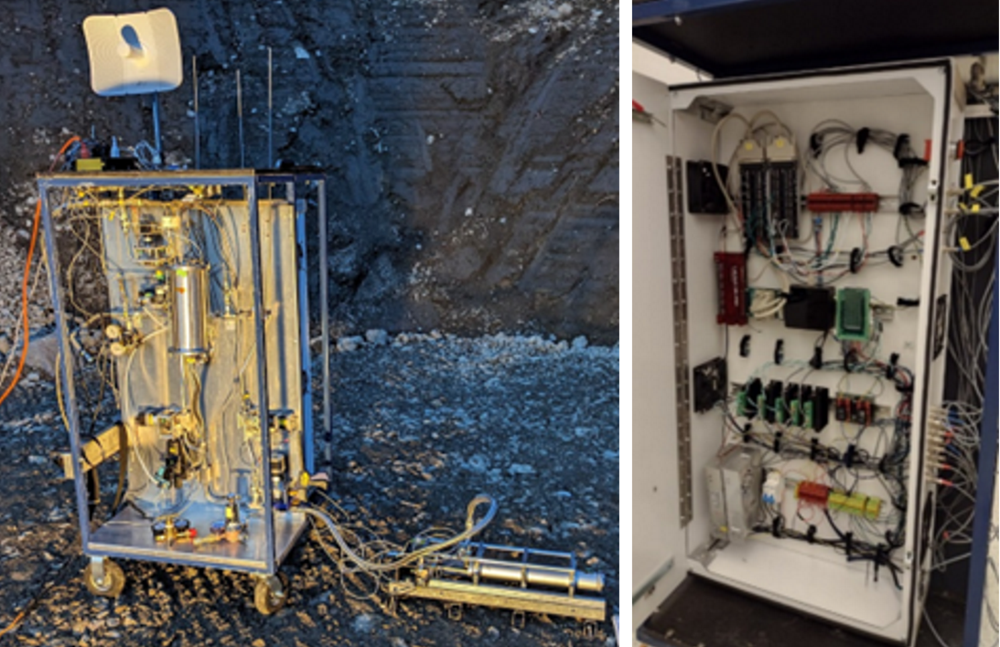

Hi, I'm Blaine Tubungbanua
Welcome to my portfolio! I'm a recent mechanical engineering graduate passionate about mechatronic design and aerospace. Here are some of my engineering projects.
My ResumeMy LinkedIn
Projects
CAPSTONE: Rod Rescue: Custom Sanding Machine

For my engineering capstone project at the University of Victoria, my group and I were tasked with designing a custom sanding machine for JSF Coatings, a local powder coat shop. The machine was designed to remove powder coat overspray from steel hanging rods.
The hanger rods need to maintain surface conductivity, so that parts hanging from them can be electrically grounded, to electrostatically attract the paint. However, when the rods get covered in paint and cured in the oven, this surface conductivity is lost, and the paint must be removed by hand, which is an unpopular task on the shop floor.
Our machine automated this task, allowing operators to place painted rods in the machine, press a button, walk away, and return to a fully cleaned rod.
My Responsibilities:
- Idler Roller Assembly - Converts rotation to axial translation
- Electrical System - Power calculations, component selection, programming, schematics
- Structural Analysis - Loading, stress, and fatigue analysis on shafts and sanding arms
Angled Idler Roller Assembly: Test Jig

I designed this test jig to verify that the angled idler would convert rotation to axial translation
- 3D printed pillow blocks secure the bearings for the rollers, and a 3D printed adjustable roller assembly allows the angle of the idler to be calibrated.
- Parallel powered rollers cause the bar to spin, and the angled idler roller applies pressure from above, exerting an axial force to allow translation.
- The bottom rollers were designed to have less grip, to promote slipping along the parallel rollers while the top roller has more grip, to facilitate translation.
- In this test jig, the parallel rollers were powered by a cordless drill, and a handheld belt sander simulated the forces from the sander
This testing jig allowed us to verify the concept, and estimate how much downward force was required from the top roller to facilitate axial sliding without seizing.
Angled Idler Roler Assembly: Final Design

This was my final design for the angled idler assembly.
- The whole assembly can slide up and down along the two shoulder bolts, which locate the springs, supplying the required downwards force on the bar.
- Smooth sliding is ensured by the two brass bushings in the top square bar.
- To simplify machining requirements A shoulder bolt is used as the roller shaft, locating two bearings with 3D printed spacers.
Angled Idler Assembly: Spring Calculations

To ensure that the angled idler supplies sufficient downwards force to facilitate axial translation, I conducted spring stiffness and pre-tension calculations
- Empirical testing showed that ~15lbs of force was required to facilitate translation.
- Spring pre-tension, and buttom-out position were calculated, and a spring stiffness and length were selected to supply 15lbs-20lbs for rods over a range of motion that could accept varying bar diameters, from ½” and 7/8”, as requested by the client.
PCB Shield

To ensure robust electrical connections between the Arduino and the peripherals in a high-vibration environment, I designed a custom PCB shield.
- This shield implemented screw terminals, labels, pull-up resistors, reverse polarity protection, and a temperature sensor to detect overheating.
- This shield also improved ease of use and cable management for signal-ground pairings, allowing signal pairs to run next to each other.
- The first iteration was designed on protoboard, shown above.
- The final iteration was designed in KiCad.
UVic Rocketry: Test Stand Instrumentation System
The Propulsion Development Platfrm (PDP) is the UVic Rocketry team's hybrid rocket engine test stand, designed to test and validate the team's student-designed engines on the ground, before attaching the engine to a flight vehicle.
Serving as the instrumentation lead, I was responsible for designing and implementing the instrumentation system, designed to monitor and record temperatures, pressures, mass flow, and thrust for static hot fire tests.
In this role, I took ownership of acquring hardware, soldering cables and connectors, calibrating the sensors, and writing LabVIEW instrumentation code.

Instrumentation components in the electrical box. The system uses a LabJack U6 DAQ, connected to 2 multiplexor boards. The cables are then grouped at DIN terminals and connect to 4-strand cable which are soldered to the connectors interfacing with the outside of the cabinet.

Calibration of our thrust load cell on MTI tensile tester.

Successful hotfire of Mule-1, the team's test engine, verifying functionality of the test platform.
Mechatronic Conveyor Belt Sorter

For a 4th year mechatronics technical elective, I wrote embedded software to control a conveyor belt sorting machine, programmed in bare-metal C, manually flipping bits on an ATMega2560 to access onboard clock, timers, PWM, ADC, and interrupt flags.
The system is designed to sort 48 cylinders of 4 different materials. It distinguishes the materials using a reflectometer, storing the categorized objects in a linked list. The cylinders are then dropped into a rotating bucket, actuated by a stepper motor. Debounce code was written into the push-button interface.

IO wired to the Arduino Mega. Push buttons control start/stop/pause functionality, with custom debounce code written. LCD screen displays number of each material counted. 47kOhm resistors are also wired into sensors, acting as low-pass filters to eliminate false triggers caused by electrical noise generated by the brushed DC motor. Clean cable management was one of the deliverables.

The system was designed as a finite state machine, shown in this diagram.
- As the system categorizes incoming cylinderes, they are stored in a linked list
- A software debounce was implemented for the push-button interface
- Interrupt Service Routines (ISRs) were programmed to detect sensor triggers, and button presses.

A reflectometer sensor was used to distinguish each distinct material. To calibrate the system, the amount of light reflected for each material was determined by measuring the voltage off the reflectance sensor. After taking a large sample size, the different materials were categorized.
- A - Aluminum
- S - Steel
- W - White Plastic
- B - Black Plastic
UVic Rocketry: N2O Injector CFD Analysis

Working on the Rocketry Team's hybrid rocket engine, I conducted this CFD simulation to investigate different liquid oxidizer injector configurations to supply N2O to our combustion chamber. The goal of this simulation was to investigate desired mass flow, pressure drop, and atomization Into the combustion chamber, completed in ANSYS Fluent.
This project was completed for the UVic Rocketry team, and as a deliverable for a UVic technical elective course: Computer Aided Engineering, where I studied modelling, FEA, and CFD in Siemens NX, and ANSYS.
This project was complepted in partnership with UVic Rocketry, and as a deliverable for a UVic technical elective: Computer Aided Engineering, where I studied modelling, FEA, and CFD in Siemens NX, and ANSYS.
2D & 3D Meshing

To accelerate simulation time, 2D and 3D models were used. 2D simulations were used to quickly alter geometry and simulate results while 3D models were used to verify the 2D results and test the final configuration.
The scope of this simulation only covered injector flow, assuming no combustion, eliminating comustion simulation commplications, instead focusing on simulating pressures for cold flow tests.

Optimization of the orifice diameter, length, and angle were investigated. To accelerate simulation time, a simplfied 2D single orifice model was used, and and open-loop parameter optimization was conducted using the parameter set tools in ANSYS Workbench.

A swirl injector was also investigated, proving to eliminate the air eddy seen in the non-swirled configuration.
Machine Design: Tugboat Gearbox Assembly

Design of a gearbox for a hybrid electric tugboat, combining a input power from a 2500kW diesel prime mover with a 1500kW electric engine, reducing the shaft speeds from 1000 and 3000rpm.
Work Done:
- Conducted loading, stress, and fatigue calculations with stress concentrations.
- Conducted initial sizing of gears to achieve manageable stress for material.
- Detailed bearing selection, specifying locating and non-locating bearings.
- Iterated through compound gear combinations to minimize loading.
- Calculated overall efficiency of the gearbox, including loss contributions from bearings, seals, and meshing efficiency.
- Detailed assembly operations and procedures.
- Calculated speed ratios to achieve desired reduction.

3D model of reduction shaft. Labeled features are A: Retaining ring groove, B: Bearing seat, C: Bearing abutment shoulder, D: key way, E: Gear shoulder, F: Gear shoulder, G: Key way, H: Gear shoulder, I: Key way, J: Bearing abutment shoulder, K: Bearing seat, L:Lock nut threads.

Free body diagram of the reduction shaft, considering tangential and radial components of gear meshing forces.
1st Place Miniature Flywheel Powered Vehicle

A miniature vehicle, powered by a steel flywheel rotating at 1600 rpm, to propel the vehicle 40m in the shortest time, designed with lasercut and 3D printed components.
Solution: A lasercut plywood chassis, supporting the flywheel on a delrin shaft. The flywheel is free to freely rotate when the back tool mechanism is held back by a pin. When the pin is removed, a spring engages the black tooth mechanism, meshing the flywheel with a spooled belt mechanism. At initial engagement, the flywheel applies higher torque to the drive wheels at the rear. As the belt unspools, the torque reduces and the speed increases.

Closeup of the meshing mechanism and the belt drive, allowing variable gear ratio.